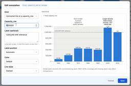
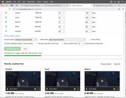
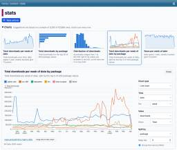

Simon Willison's Weblog
フィード

datasette-charts 0.4a0
Simon Willison's Weblog
<p><strong>Release:</strong> <a href="https://github.com/datasette/datasette-charts/releases/tag/0.4a0">datasette-charts 0.4a0</a></p> <p>The new datasette-charts plugin has its own plugin hook to allow other plugins to define new chart types, but I hadn't actually used it for anything yet. I had Claude Opus 5.5 build an experimental plugins just to try out the hook and it came up with a bunch of friction points in the design. This release addresses those, which should make building additional chart plugins a whole lot more ergonomic.</p><p>I've also added a website for the plugin, at <a href="https://charts.datasette.io/">charts.datasette.io</a>. The new website includes a <a href="https://charts.datasette.io/docs/plugins/">tutorial for plugin authors</a>, and <a href="https://charts.datasette.io/gallery/">a gallery</a> showing all of the core charts and annotations, each one linking to an interactive demo on <a href="https://lite.datasette.io/">Datasette Lite</a>.</p><p><img alt="Sc
17時間前

datasette-mcp 0.4
Simon Willison's Weblog
<p><strong>Release:</strong> <a href="https://github.com/datasette/datasette-mcp/releases/tag/0.4">datasette-mcp 0.4</a></p> <p>Fixed for compatibility with <a href="https://docs.datasette.io/en/latest/changelog.html#a44-2026-11-22">Datasette 1.0a44</a>.</p> <p>Tags: <a href="https://simonwillison.net/tags/model-context-protocol">model-context-protocol</a>, <a href="https://simonwillison.net/tags/datasette">datasette</a></p>
2日前
Quoting Jack Despain Zhou
Simon Willison's Weblog
<blockquote cite="https://www.tracingwoodgrains.com/p/spitting-in-the-face-of-glaude"><p>Among the many already existing effects of AI has been a great de-individualization. I open a YouTube video, and I hear Claude. I sit in a conference presentation, and I hear Claude. I open my email inbox, and I find pitches and articles from ostensibly serious people with ostensibly serious credentials attached to ostensibly serious institutions who want to publish things attached to their reputations and mine, <em>and I see Claude</em>.</p></blockquote><p class="cite">— <a href="https://www.tracingwoodgrains.com/p/spitting-in-the-face-of-glaude">Jack Despain Zhou</a>, Spitting in the Face of Glaude</p> <p>Tags: <a href="https://simonwillison.net/tags/ai-misuse">ai-misuse</a>, <a href="https://simonwillison.net/tags/claude">claude</a>, <a href="https://simonwillison.net/tags/generative-ai">generative-ai</a>, <a href="https://simonwillison.net/tags/ai">ai</a>, <a href="https://simonwillison.
2日前
sqlite3_rsync: Database Remote-Copy Tool For SQLite
Simon Willison's Weblog
<p><strong><a href="https://www.sqlite.org/rsync.html">sqlite3_rsync: Database Remote-Copy Tool For SQLite</a></strong></p>This additional SQLite tool has been around for a while now - it was added as "experimental" <a href="https://www.sqlite.org/releaselog/3_47_0.html">in SQLite 3.47.0 in October 2024</a> and enhanced in <a href="https://www.sqlite.org/releaselog/3_50_0.html">SQLite 3.50.0 in May 2025</a>. It was only today that I understood one of its most attractive characteristics.</p><p>Normally, if you want to grab a snapshot copy of a SQLite database, you need to use either the <a href="https://www.sqlite.org/backup.html">backup API</a> or <a href="https://www.sqlite.org/lang_vacuum.html#vacuuminto">VACUUM INTO</a>. In both cases you need enough disk space to create a duplicate copy of your database, so if you're on a small instance and you already use more than half of the available disk you are plain out of luck.</p><p><code>sqlite3_rsync</code> can copy a snapshot of your d
2日前
The New York Times warns photographers not to update Photoshop over AI features
Simon Willison's Weblog
<p><a href="https://news.ycombinator.com/item?id=50647673#50651685">My comment</a> on <a href="https://news.ycombinator.com/item?id=50647673">The New York Times warns photographers not to update Photoshop over AI features</a> — Hacker News.</p><p>I had a NYT photographer take my picture at my home earlier this year (for a story about Moltbook, oddly enough). At one point I asked if they could fix things up if I had a stain on my shirt and they said absolutely not - they present photographs as they were taken, with cropping and balancing applied but no edits beyond that.</p><p>He did spend a bunch of time trying to find the best possible natural lighting for the shots he wanted.</p><p>The photo at the top of <a href="https://www.nytimes.com/2026/02/02/technology/moltbook-ai-social-media.html">https://www.nytimes.com/2026/02/02/technology/moltbook-ai-so...</a> is my laptop, taken in my garden, after hunting around for the best spot that didn't have too much glare on the screen. Yo
3日前
Quoting Scott Aaronson
Simon Willison's Weblog
<blockquote cite="https://scottaaronson.blog/?p=10379"><p>It’s now obvious that we’ll be getting, not one-off solutions to this or that complexity question, but a whole new continent of mathematical truth, one that we’d previously only glimpsed through fog. Picture van Leeuwenhoek first training a microscope on pondwater, or Galileo first training his telescope on the stars. That might give you <em>some</em> idea of how our resolution into the complexity-theoretic universe, and the whole universe of mathematical truth beyond it, has now improved.</p></blockquote><p class="cite">— <a href="https://scottaaronson.blog/?p=10379">Scott Aaronson</a></p> <p>Tags: <a href="https://simonwillison.net/tags/mathematics">mathematics</a>, <a href="https://simonwillison.net/tags/llms">llms</a>, <a href="https://simonwillison.net/tags/ai">ai</a>, <a href="https://simonwillison.net/tags/generative-ai">generative-ai</a></p>
3日前

datasette-charts 0.3a0
Simon Willison's Weblog
<p><strong>Release:</strong> <a href="https://github.com/datasette/datasette-charts/releases/tag/0.3a0">datasette-charts 0.3a0</a></p> <p>I added chart annotations to <a href="https://github.com/datasette/datasette-charts">datasette-charts</a>!</p><p>You can now render a chart and then annotate it with lines, shaded areas, labels, or a combination of the three.</p><p>A chart with annotations looks like this:</p><p><img alt="Screenshot of an annotated bar chart with the y-axis label "↑ Total capacity_mw", showing blue bars for each decade from 1950 to 2010. Capacity is low in the earlier decades, then jumps sharply for 2000 and 2010. The chart carries three annotations: a gray shaded band across 1950 to 1990 with the note "Much smaller summed capacity in earlier decades", a dot on top of the 2000 bar labeled "Largest decade total in these records: 1.157 million MW", and a dashed horizontal line labeled "1,000,000 MW reference". A caption below re
3日前

Three LLM inflection points in twelve months 2
2
Simon Willison's Weblog
<p>I gave a keynote at the <a href="https://ai.engineer/code/2026">AI Engineer Code Summit</a> a couple of weeks ago, constructed around the idea that there have been three significant inflection points in the abilities of LLMs and coding agents in the past twelve months.</p><p>Here's <a href="https://www.youtube.com/watch?v=9RKrSF9d2SE">the video</a> of the talk. In this post I'm going to pull out the major inflection point theme and interrogate it more deeply.</p><p><lite-youtube videoid="9RKrSF9d2SE" js-api="js-api" title="2026 in LLMs — Simon Willison" playlabel="Play: 2026 in LLMs — Simon Willison"> </lite-youtube></p><h4 id="coding-agents-in-november-2025">Coding agents in November 2025</h4><p>Today, November 24th 2026, is the one year anniversary of the release of <a href="https://www.anthropic.com/news/claude-opus-4-5">Claude Opus 4.5</a>. With hindsight, this was a consequential model.</p><p>In the Opus 4.5 announcement, Anthropic said:</p><blockquote><p>Testers noted that Cl
4日前
GPT 6.2 Astra Solves a Historical Mystery
Simon Willison's Weblog
<p><strong><a href="https://generativehistory.substack.com/p/gpt-62-astra-solves-a-historical">GPT 6.2 Astra Solves a Historical Mystery</a></strong></p>Here's an interesting case-study in using GPT-6.2 Astra for historical research, from history professor Mark Humphries:</p><blockquote><p>With only minimal prompting, GPT-6.2 Astra was able to autonomously identify the creator of an anonymous 1808 sketchbook held at <a href="https://beinecke.library.yale.edu/">Yale’s Beinecke Library</a>. It did so extremely quickly (in just 22 minutes), using publicly available primary and secondary sources. To do so, it discovered a little known source in a paper archive, predicted that it would prove its hypothesis if examined and, in the end, it did. Not only that, but this new source turns out to be a major find on its own that will be of significant interest to both Canadian and fur trade historians.</p></blockquote><p>Here's <a href="https://collections.library.yale.edu/catalog/32369099">the di
4日前
datasette-charts 0.2a1
Simon Willison's Weblog
<p><strong>Release:</strong> <a href="https://github.com/datasette/datasette-charts/releases/tag/0.2a1">datasette-charts 0.2a1</a></p> <blockquote><p>Minor UI improvements:</p><ul><li>Collapsing the <strong>suggested charts</strong> section now leaves the chart visible.</li><li>Following a link to a chart opens it with the suggestions collapsed for that visit.</li><li>On table pages the panel now sits below the "4,235 rows where country = CHN" line.</li><li>The "Data" table under each chart has been replaced by <strong>Copy TSV</strong> and <strong>Copy CSV</strong> buttons.</li><li>Removed the "Chart this data" item from the table, view and query action menus.</li><li>More space between lines in chart tooltips.</li></ul></blockquote> <p>Tags: <a href="https://simonwillison.net/tags/datasette">datasette</a>, <a href="https://simonwillison.net/tags/visualization">visualization</a>, <a href="https://simonwillison.net/tags/datasette-charts">datasette-charts</a></p>
4日前
datasette-charts 0.2a0
Simon Willison's Weblog
<p><strong>Release:</strong> <a href="https://github.com/datasette/datasette-charts/releases/tag/0.2a0">datasette-charts 0.2a0</a></p> <p>I introduced this new charting plugin for Datasette <a href="https://simonwillison.net/2026/Nov/23/datasette-charts/">yesterday</a>. Today it's gained integration with <a href="https://agent.datasette.io/">Datasette Agent</a>, so now you can ask chat for a chart and it will create one for you using the same underlying chart suggestion and generation tools.</p><p>Here's a demo video, recorded on <a href="https://agent.datasette.io/">agent.datasette.io</a> where you can sign in with GitHub to try the plugin yourself:</p><figure> <video controls playsinline preload="none" width="1440" height="1080" style="max-width: 100%; height: auto" poster="https://static.simonwillison.net/static/cors-allow/2026/datasette-charts-agent-demo.webp" aria-label="Demo of the Datasette charts agent (silent screen recording)" aria-describedby="charts-demo-desc"> <source src
5日前
datasette-agent 0.7a1
Simon Willison's Weblog
<p><strong>Release:</strong> <a href="https://github.com/datasette/datasette-agent/releases/tag/0.7a1">datasette-agent 0.7a1</a></p> <p>A small improvement to <a href="https://agent.datasette.io/">Datasette Agent</a>: chat sessions could already open an iframe side panel that could then navigate to different pages. This version improves navigation by fragment hashes, for deeper integration with other Datasette plugins that update fragment hashes when the user interacts with the plugin in a way that changes state.</p><p>I built this in order to fix some bugs with the much more exciting <a href="https://simonwillison.net/2026/Nov/24/datasette-charts/">datasette-charts 0.2a0 release</a>.</p> <p>Tags: <a href="https://simonwillison.net/tags/datasette-agent">datasette-agent</a>, <a href="https://simonwillison.net/tags/datasette">datasette</a></p>
5日前

GLM-5.4: Toward Generalized Coding with Our First Loop Transformer
Simon Willison's Weblog
<p><strong><a href="https://z.ai/blog/glm-5.4">GLM-5.4: Toward Generalized Coding with Our First Loop Transformer</a></strong></p>GLM 5.4 is now available from Chinese AI lab Z.ai. It's their first model to use a looped transformer architecture, which they describe like this:</p><blockquote><p>In a standard Transformer, each layer runs once per forward pass. In a Loop Transformer, a group of weight-shared layers runs for multiple iterations, refining the hidden states from the previous pass. This gives us a deeper network without increasing the parameter count.</p></blockquote><p>This is the second mention of looped transformers I've seen in the past week - the first was <a href="https://thinkingmachines.ai/news/inkling-2-mini/">Inkling 2 Mini</a> from Thinking Machines Lab on November 20th, who said:</p><blockquote><p>Inkling 2 Mini is a looped transformer, running the middle layers of the model three times for every token. This allows the model to apply more reasoning and reach the
5日前

Ladybird's first alpha release
Simon Willison's Weblog
<p><a href="https://ladybird.org">Ladybird</a> is an astonishingly ambitious project: a new browser, in 2026, with its own implementation of most of the key components - HTML parsing, CSS engine, layout, JavaScript, even WebAssembly. It still uses a few external components - things like <a href="https://github.com/harfbuzz/harfbuzz">HarfBuzz</a> for text shaping, <a href="https://skia.org/">Skia</a> for 2D graphics, ffmpeg for video, and SQLite for the things you do with SQLite. Everything else is part of Ladybird, or code brought in from Ladybird's even more ambitious predecessor project <a href="https://serenityos.org/">SerenityOS</a>.</p><p>This morning the Ladybird project <a href="https://ladybird.org/posts/alpha/">released their first alpha</a>, which means you can now <a href="https://ladybird.org/download/">install the browser</a> (on macOS or Linux) without having to compile it yourself!</p><p>I've been trying it out today, and it's very impressive. It feels fast, the UI is l
5日前

datasette-charts 0.1a0
Simon Willison's Weblog
<p><strong>Release:</strong> <a href="https://github.com/datasette/datasette-charts/releases/tag/0.1a0">datasette-charts 0.1a0</a></p> <p>I've been thinking about this problem for over a year now, but on Sunday I finally fired up Claude Fable 5.2 to build an initial prototype. The prototype went so well that this is now a full plugin.</p><p>You can <a href="https://lite.datasette.io/?install=datasette-charts#/content/stats#chart=%7B%22v%22%3A1%2C%22type%22%3A%22line%22%2C%22encoding%22%3A%7B%22x%22%3A%7B%22column%22%3A%22date%22%2C%22timeUnit%22%3A%22week%22%7D%2C%22y%22%3A%7B%22column%22%3A%22downloads%22%2C%22aggregate%22%3A%22sum%22%7D%2C%22series%22%3A%7B%22column%22%3A%22package%22%2C%22limit%22%3A5%2C%22other%22%3Atrue%7D%7D%2C%22options%22%3A%7B%7D%7D">try it out in Datasette Lite here</a>. It looks like this:</p><p><img alt="Screenshot of a Datasette table page for a "stats" table showing a new Charts panel. A row of suggested chart thumbnail cards sits at the top, e
6日前

Select Styling Specimens
Simon Willison's Weblog
<p><strong>Tool:</strong> <a href="https://tools.simonwillison.net/select-styling">Select Styling Specimens</a></p> <p>I got frustrated at how HTML <code><select></code> boxes default to looking different in different browsers, and are (I think) quite ugly in Chrome:</p><p><img alt="The same select box in Chrome, Safari, and Firefox, Chrome is white with a black border. Safari is grey with no border. Firefox is gray with a black border. They are all slightly different sizes." src="https://static.simonwillison.net/static/2026/select-firefox-safari-chrome.webp" /></p><p>So I had Claude Fable 5.2 <a href="https://claude.ai/share/a82c181c-0ea6-4fec-a659-8de653cb3e7b">build</a> me <a href="https://tools.simonwillison.net/select-styling">this page</a> showing all of the ways they can be styled:</p><blockquote><p><code>Build an HTML page that shows all of the ways a select box can be styled, I plan to take screenshots in every desktop and mobile browser</code></p></blockquote><p>After
6日前
Muru 1
Simon Willison's Weblog
<p><strong><a href="https://github.com/muruhq/muru">Muru</a></strong></p>Graham Dumpleton started <a href="https://modwsgi.readthedocs.io/">mod_wsgi</a> 20 years ago, and has been thinking about the ideal way to serve Python web applications in production ever since.</p><p>Muru is his new, AI-assisted Rust server that aims to provide the best possible tools for running ASGI and WSGI Python apps both in development and production.</p><p>As <a href="https://simonwillison.net/2026/Sep/11/wrapture/">he did with wrapture</a>, he's been publishing an extraordinarily detailed account of the project as he works on it - as part of his development process.</p><p>Here's everything he's published so far, all in the last three weeks:</p><ul><li>2026-11-04 — <a href="https://grahamdumpleton.me/posts/2026/11/twenty-years-of-mod-wsgi/">Twenty years of mod_wsgi, and what comes next</a></li><li>2026-11-05 — <a href="https://grahamdumpleton.me/posts/2026/11/a-first-look-at-muru/">A first look at Muru</a
7日前
Quoting Ravi Vakil
Simon Willison's Weblog
<blockquote cite="https://math216.wordpress.com/2026/11/20/hurried-announcement-alessandro-masullo-grh/"><p>Alessandro Masullo has a proposed proof of [Generalized Riemann Hypothesis], and Brian Conrad has been looking closely at it for months and gave extensive feedback which is being incorporated, and it is so far looking good. It is all human, with no AI. The hope was to bring Alessandro to Stanford for a year to polish the writing and then announce it after running it by enough people. Now it seems best to put out the current draft.</p></blockquote><p class="cite">— <a href="https://math216.wordpress.com/2026/11/20/hurried-announcement-alessandro-masullo-grh/">Ravi Vakil</a>, Hurried Announcement: Alessandro Masullo GRH</p> <p>Tags: <a href="https://simonwillison.net/tags/mathematics">mathematics</a></p>
8日前
Quoting Levent Alpöge
Simon Willison's Weblog
<blockquote cite="https://alpo.ge/remark.pdf"><p>I believe I have, working with Claude, discovered a proof of the Riemann Hypothesis. In fact, the method easily extends much further, resolving the so-called Generalized Riemann Hypothesis, and I expect, with more time, the Extended Riemann Hypothesis too. Claude and I have also formalized the arguments without assumptions. It is natural to feel that this is an end, in my case a loss of a principal guiding light, but what I saw during the course of progress so amazed me that I believe it is one dawn across science of something far greater. [...]</p><p>Claude and I have had a great time together with such breadth in recent months, but this time Claude far outpaced me near the finish line. No, Claude flew, and danced, and sparkled near that finish line.</p></blockquote><p class="cite">— <a href="https://alpo.ge/remark.pdf">Levent Alpöge</a>, alpo.ge/remark.pdf</p> <p>Tags: <a href="https://simonwillison.net/tags/anthropic">anthropic
8日前
llm-gemini 0.38.1
Simon Willison's Weblog
<p><strong>Release:</strong> <a href="https://github.com/simonw/llm-gemini/releases/tag/0.38.1">llm-gemini 0.38.1</a></p> <p>Gemini 4 Carbon only supports <code>low</code>, <code>medium</code> and <code>high</code> reasoning levels - but Gemini 4 Hydrogen and Gemini 4 Neon both have an extra <code>xhigh</code> level.</p><p>I missed that when I added those models to the <code>llm-gemini</code> plugin, which is now fixed in this dot release.</p><p>The <code>xhigh</code> setting for Hydrogen makes a <em>significant</em> difference. I updated my <a href="https://static.simonwillison.net/static/2026/gemini-4-carbon-neon-hydrogen-with-xhigh.html">Gemini 4 comparison grid</a> - note how Hydrogen at high used 5,311 output tokens and cost 3.99 cents, but the same model at xhigh used 31,477 output tokens, cost 23.61 cents, and produced a pelican that's competitive with Gemini 4 Neon:</p><p><img alt="Screenshot of a comparison table of illustrations of a pelican riding a bicycle, generated by th
9日前
Token fraud is here and it’s BAD (YouTube)
Simon Willison's Weblog
<p><strong><a href="https://www.youtube.com/watch?v=ZDpP7JXPlhc">Token fraud is here and it’s BAD (YouTube)</a></strong></p>Claire Vo runs <a href="https://www.chatprd.ai">ChatPRD</a>, an AI platform that helps product managers "turn an idea into a spec". The product has been live since the GPT-4 era, and Claire has been building it in public for much of that time.</p><p>In this YouTube video (see also the <a href="https://x.com/clairevo/status/2119985786045227197">accompanying Twitter post</a>) Claire describes the <em>flood</em> of token fraud she has seen from groups abusing the product's free trial, sometimes just to get free AI usage but often to resell tokens or run other commercial enterprises on top of the ChatPRD agent.</p><blockquote><p>I am funding a international Roblox and Fortnite map studio. They run a loop of free trials and promo codes and then tunnel to my agent and use it to build Roblox and Fortnite maps.</p></blockquote><p>Apparently one of the common prompts Clai
9日前
PostgreSQL 19 Released
Simon Willison's Weblog
<p><strong><a href="https://www.postgresql.org/about/news/postgresql-19-released-3449/">PostgreSQL 19 Released</a></strong></p>Most years PostgreSQL ships a new release in September, but this year's release came two months later <a href="https://rhaas.blogspot.com/2026/10/postgres-19-is-late-and-its-ais-fault.html">thanks mainly</a> to the flurry of issues that the PostgreSQL team needed to address as part of the ongoing AI-reported vulnerability apocalypse.</p><p>This release was definitely worth the wait. My favorite new feature is this one:</p><blockquote><p>For applications that send reads to standbys, PostgreSQL 19 adds "read-your-writes" consistency with the new <a href="https://www.postgresql.org/docs/19/sql-wait.html"><code>WAIT FOR LSN</code></a> command. A session on a standby can use <code>WAIT FOR LSN</code> to wait until the standby has replayed the write-ahead log (WAL) up to a specific <a href="https://www.postgresql.org/docs/19/wal-internals.html">log sequence number (
9日前
llm-gemini 0.38
Simon Willison's Weblog
<p><strong>Release:</strong> <a href="https://github.com/simonw/llm-gemini/releases/tag/0.38">llm-gemini 0.38</a></p> <p>Today Google <a href="https://blog.google/innovation-and-ai/models-and-research/gemini-models/introducing-gemini-4-neon/">introduced Gemini 4 Neon</a>. I <a href="https://simonwillison.net/2026/Nov/12/llm-gemini/">wrote recently</a> about how confusing the pricing for the Gemini 4 series was - Neon has somehow made this even worse.</p><p>Previously the Gemini 4 lineup was Hydrogen, Argon, and Carbon - where Argon and Carbon were <em>the same price</em>, and Hydrogen was 3/4 of that price now but will be 1/4 of that price when the other two double an 1st December once their initial discount pricing expires.</p><p>The Neon announcement pretends that Argon doesn't exist. Here's their new image explaining the model line-up:</p><p><img alt="Comparison table slide titled "Gemini 4 - Our next era of frontier intelligence" with three model columns, Carbon, Neon an
10日前
datasette-arrows 0.1a0
Simon Willison's Weblog
<p><strong>Release:</strong> <a href="https://github.com/datasette/datasette-arrows/releases/tag/0.1a0">datasette-arrows 0.1a0</a></p> <p><a href="https://docs.datasette.io/en/latest/changelog.html#a43-2026-11-15">Datasette 1.0a43</a> added the ability for plugins to implement streaming export formats. Datasette core supports streaming CSV and TSV - you can export millions of lines of data from a table without needing to load it all into memory, because those two file formats support streaming data in chunks. The <a href="https://docs.datasette.io/en/latest/plugin_hooks.html#register-output-renderer-datasette">register_output_renderer()</a> plugin hook can now be used to implement the same pattern for other formats.</p><p>I've learned never to release a new plugin feature without accompanying it with a plugin that uses it.</p><p>Claude Fable 5.2 suggested the <a href="https://arrow.apache.org/docs/python/ipc.html">Apache Arrow streaming</a> format as a good option, and built this plug
10日前
Quoting Daniel Stenberg
Simon Willison's Weblog
<blockquote cite="https://daniel.haxx.se/blog/2026/11/17/actual-curl-rewrites-in-rust/"><p>During the time these agents converted 185,000 lines of C code into 340,000 lines of Rust code (I counted), we merged over 300 commits in the actual curl project. We actually improved curl during these a little more than three weeks. A little over 200 bugfixes actually. 200 bugfixes that none of those rust rewrites have. We also fixed a few vulnerabilities. In another month we have done another 200 and maybe fixed a few more vulnerabilities. Will these clones keep up?</p></blockquote><p class="cite">— <a href="https://daniel.haxx.se/blog/2026/11/17/actual-curl-rewrites-in-rust/">Daniel Stenberg</a>, Actual curl rewrites in Rust</p> <p>Tags: <a href="https://simonwillison.net/tags/daniel-stenberg">daniel-stenberg</a>, <a href="https://simonwillison.net/tags/curl">curl</a>, <a href="https://simonwillison.net/tags/rust">rust</a>, <a href="https://simonwillison.net/tags/security">security</a>,
10日前
The PSF end-of-year fundraiser
Simon Willison's Weblog
<p><strong><a href="https://donate.python.org">The PSF end-of-year fundraiser</a></strong></p>With my Python Software Foundation board director hat on: we've launched our end-of-year fundraiser for the non-profit that supports Python development and the Python community.</p><p>If your company or your work benefits from Python, please consider donating this year!</p><p>The PSF looks after the IP behind Python, operates PyPI, sponsors core developer sprints, supports community events (including running PyCon US every year), and employs a small and excellent staff team to keep everything running.</p><p>We also operate the <a href="https://www.python.org/psf/developersinresidence/">Developers in Residence program</a>, which now includes three security developers (welcome, Brett Smith) focused on helping secure Python, PyPI, and the wider ecosystem. <p>Tags: <a href="https://simonwillison.net/tags/python">python</a>, <a href="https://simonwillison.net/tags/psf">psf</a></p>
10日前
External sandboxes for coding agents
Simon Willison's Weblog
<p><strong><a href="https://blog.primeradiant.com/external-sandboxes-for-coding-agents/">External sandboxes for coding agents</a></strong></p>I've been exploring new ways to sandbox code that is executed by agents, with a focus on making it safer to try out local models without worrying that a mistake or prompt injection attack might cause them to take damaging actions on a machine.</p><p>I worked on this project with <a href="https://primeradiant.com">Prime Radiant</a>, the AI research lab behind Superpowers and <a href="https://github.com/orgs/prime-radiant-inc/repositories">other projects</a>.</p><p><a href="https://blog.primeradiant.com/external-sandboxes-for-coding-agents/">My post</a> on the Prime Radiant blog introduces the <strong>external sandbox</strong> pattern, where code executed by the agent runs inside a dedicated sandbox while the agent itself lives outside of that sandbox.</p><p>To demonstrate this pattern we've released three sandbox server implementations:</p><ul><l
11日前
GPT‑6.2 Astra and GPT‑6.2 Sol
Simon Willison's Weblog
<p><strong><a href="https://openai.com/index/introducing-gpt-6-2-astra-sol/">GPT‑6.2 Astra and GPT‑6.2 Sol</a></strong></p>OpenAI:</p><blockquote><p>We’re introducing GPT‑6.2 Astra, our new frontier model for your hardest projects, and GPT‑6.2 Sol, our efficient, versatile model for everyday work.</p></blockquote><p>They're available in the API as <code>gpt-6.2-astra</code> and <code>gpt-6.2-sol</code>. I shipped <a href="https://llm.datasette.io/en/stable/changelog.html#v0-38">LLM 0.38</a> with support for the new models.</p><p>6.2 Astra is 80% of the price of 6 Astra - $8/MTok input and $40/MTok output, the same price as Claude Fable 5.2 (which was also 80% of its predecessor). 6 Astra and Fable 5 were both $10/$50. The cached price is an even bigger discount - $0.40/million compared to $1/million for the older model. This is great news for longer running agentic sessions.</p><p>GPT-6.2 Sol is the same $2/$10 price as 6.1 Sol and 6 Sol - which are half the price of GPT-5.6 Sol ($4/$
11日前
Running the full server-side Datasette Python app in the browser with service workers and Pyodide
Simon Willison's Weblog
<p><a href="https://lite.datasette.io/">Datasette Lite</a> is my port of the <a href="https://datasette.io/">Datasette</a> Python application to run directly in the browser using WebAssembly and <a href="https://pyodide.org/">Pyodide</a>. I've released a complete rewrite of Datasette Lite using service workers, and it's now almost indistinguishable from the real server-side application.</p><p>You can now do all of the following, using a carefully crafted URL to <strong>lite.datasette.io</strong>:</p><ul><li>Load client-side Datasette to browse any SQLite database, JSON file, CSV file or SQL script</li><li>Select a released version of Datasette to load from PyPI</li><li>Load a specific commit, tag, or branch name from the Datasette GitHub repository</li><li>Pick from over 100 versions of SQLite to use with Datasette</li><li>Install additional Datasette plugins from PyPI or URLs to wheel files, including JavaScript visualization tools</li></ul><p>The ability to load specific Datasette r
11日前
Quoting Go Proverbs
Simon Willison's Weblog
<blockquote cite="https://go-proverbs.github.io"><p>A little copying is better than a little dependency.</p></blockquote><p class="cite">— <a href="https://go-proverbs.github.io">Go Proverbs</a>, <a href="https://news.ycombinator.com/item?id=50516689#50526408">via</a></p> <p>Tags: <a href="https://simonwillison.net/tags/go">go</a>, <a href="https://simonwillison.net/tags/programming">programming</a></p>
11日前